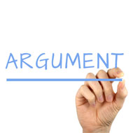
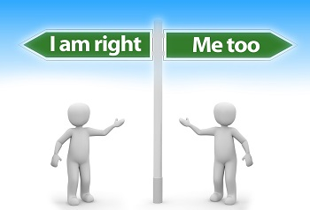

Ethical Dilemma in Modern World.
Background: Daniel is a white, 27 years old man. He is working as Web Developer in a big company in Montreal. Now he has managed the development of web application shop.ca. This website will help internet users to buy any products from any Canadian online stores. The deadline of the project is next week, but they still need to implement The Customer Support Bot and improve accessibility for people with different disabilities (people with visual impairments, hearing impairments, mobility impairments, cognitive impairments). The problem is that they have time only for one thing. Daniel should choose what to do. If they will implement support bot, they will receive extra money. It will help many web users to resolve theirs shopping issues. But with the web developer ethics code, they should prioritize website accessibility. There are a lot of users with different disabilities. They will have problems with access the site.
Dilemma: Should Daniel decide to implement Customer Support Bot or make a site to be accessible to people with different disabilities? (There are no time to implement both)
Role: Daniel is a white, 27 years old man. He is young, white heterosexual man. He received a good education. He is graduated from University. He hasn't any functional disabilities.
Target audience: Other Web Developers from the company. The question was raised on company meeting. Prioritisation of the content is a common issue for Web Developers. That’s why the question was discussed at the meeting among all programmers.
Arguments
The main obsession of the beginner programmer is to think that the user of your product will be like you: a healthy person with a powerful computer and fast internet connection. This assuming can lead to unpredictable results. The reality is that part of the real users can have problems because of slow connection or slow device and part of users won’t use the product because of their physical disabilities. According to World Health Organization, “Over a billion people, about 15% of the world's population, have some form of disability”, and “Between 110 million and 190 million adults have significant difficulties in functioning.” People with visual impairments use a special tool to access web content (known as assistive technologies, or ATs.), for example, ChromeVox (Chrome, Windows, and Mac OS X), Window Eyes Windows and Orca (Linux) (www.developer.mozilla.org). The website should be coded properly that browser is able to use that Software in a proper way. Otherwise, it will be inaccessible for people with visual impairments. This fact can be treated as a discrimination.
According to Ethics of Caring, Daniel should choose improvement of accessibility. “The Ethics of Caring (Feminism) prism asks: “What course(s) of action will best sustain and nurture a caring relationship between myself and others?” (www.depts.washington.edu ) This proposed paradigm shows our social responsibility. It shows that people should take care of other people if they really need it. This group of developers has possibilities to make this site accessible to the people with physical disabilities even if another option is to make more money or provide better quality service to the major part of clients.
Another ethical theory that we can apply in this situation is Deontology. “Deontology theory tells us that certain actions themselves are right and others are wrong regardless of the consequences.” (Ethical Theory. A Concise Anthology, Geirsson, p-147) In our case, a web developer should keep their personal code of ethics. The first part of this code is that Web applications should work for everyone. To perform it web developers should Prioritize accessibility and test with real users. Back to our case, the real user can be blind or have low vision. The web application should be accessible it this case. That shows us that, the right thing is to make the site accessible to people with different disabilities. This is exactly that Deontology theory tells us - to do the right things.
Conter-arguments
Before taking a decision about project prioritization we should take in consideration all factors. The question can be considered from the perspective of consequentialism theory. “In standard modern approaches to ethical theory, the right and the good are taken to be the two central moral concepts… Consequentialist theories hold that the good is the more fundamental of these two moral concepts. Whether or not an act is right being determined by whether the consequences of the act are good.” (Ethical Theory. A Concise Anthology, Geirsson, p-85) Proponents of this theory think that every decision must pursue bringing the greatest possible amount of pleasure even if methods are bad. In our case, taking a decision to implement The Customer Support Bot will help a lot of customers to resolve their problems easily. After that, it will bring extra money to Daniels family and to all families of Web Development team members. Finally, a decision to implement The Customer Support Bot will bring way more amount of pleasure to the people because the major amount of users have no physical disabilities, and Web Development team will be happier because of bonus from the director.
Response: We can’t make a decision based only on Consequentialism. Deontology and Ethics of care have more influence in our case. The Principles of Ethical in Web Development was introduced specially to affect a decision like this. The neglect of Code of Ethics is harmful to the company and/or its clients. A Code will not be very useful unless it is widely known and followed. Ethics of care also confirms that accessibility prioritization is more important because Web Developers should take into consideration users with physical disabilities, but not only regular users, which is a “Center” on our case. People with disabilities are more vulnerable. It is good to help them.
Ethics is all about the choices we make. We constantly face choices that affect the quality of our lives. We are aware that the choices that we make have consequences, both for ourselves and others. We are aware of the responsibility we have for our actions. (http://www.ethicssage.com) The biggest ethical authority in my life is my father. For the most important dilemmas in my life, I ask myself, “what would my father do in this situation?” I think, in this case, my father will choose to help weak and vulnerable people. Finally, to prioritize website accessibility is the right thing to do, that’s why it is written in the code of ethics, but not otherwise.
Principles of Ethical Web Development
As web developers, we are responsible for shaping the experiences of user's online lives. By making choices that are ethical and user-centered, we create a better web for everyone.
-
Web applications should work for everyone
- Built on top of progressive enhancement
- Prioritize accessibility
- Develop inclusive forms
- Test with real users
-
Web applications should work everywhere
- Built responsively
- Value performance
- Leverage off-line first capabilities
- Expose permanent, human readable, deep links
-
Web applications should respect a user's privacy and security
- Use https everywhere
- Respect user tracking preferences
- Provide users with clear information about how their information is used
- Allow users to export their data
- Secure user data
-
Web developers should be considerate of their peers
- Comment and document code
- Lint and test code
- Make use of source control and continuous integration
- Consume and contribute to open source when possible
- Treat other developers with respect
- Offer, follow, and enforce a code of conduct for open source projects
References:
- https://developer.mozilla.org/en-US/docs/Learn/Accessibility/What_is_accessibility
- https://ethicalweb.org
- https://developer.mozilla.org/en-US/docs/Learn/Accessibility/What_is_accessibility
- http://www.ethicssage.com/2017/03/why-do-we-need-ethics.html
- https://depts.washington.edu/nwcenter/lessonsclassroomms.html
- The Elements of Moral Philosophy, 4th edition, James Rachels, 2003